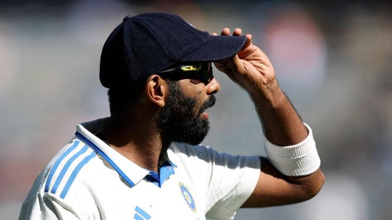

Latest Test Cricket News
NO.1 TEST BOWLERBumrah is World No 1 Test bowler!
IMAGE: Jasprit Bumrah, who captained India in Perth, returned with excellent match figures of 8/72 as India crushed Australia by 295 runs. Photograph: BCCI/X
India's star pacer Jasprit Bumrah on Wednesday toppled Kagiso Rabada and Josh Hazlewood to regain the top spot in ICC Test bowling rankings on the back of his match-winning spell against Australia in the first Test at Perth. Bumrah, who captained India in Perth, returned with excellent match figures of 8/72 as India crushed Australia by 295 runs to take 1-0 lead in the five-match Border-Gavaskar Trophy series. Bumrah, who was at No. 3 ahead of the Perth Test, now has career-best 883 ranking points while moving ahead of South African Rabada (872 points) and Aussie Hazlewood (860 points). Bumrah's teammate Mohammed Siraj also made good ground, moving up three places to 25th
Read more...How Both India & Australia Can Qualify For WTC 2025 Final ?
Both India and Australia can qualify for the ICC World Test Championship (WTC) 2025 final, which is scheduled to take place at Lord's from June 11 to 15 next year.

As many as five teams—India, Australia, Sri Lanka, New Zealand, and South Africa—are alive in the race to finish in the top-two of the World Test Championship (WTC) 2023-25 points table and qualify for the WTC 2025 final next year, which is scheduled to take place at the iconic Lord’s from June 11 to 15. India, which suffered defeats in the finals of the 2021 and 2023 WTC, currently sits at No. 1 position in the WTC 2023-25 points table with 61.11 PCT%. 2023 winners Australia is in 2nd place with 57.69 PCT%, and the two finalists of last year’s edition are followed by Sri Lanka (55.56 PCT%), New Zealand (54.55 PCT%), and South Africa (54.17 PCT%).
India is playing in its last Test series of the ongoing cycle against Australia in Australia these days, whereas New Zealand’s last series got underway on Thursday (November 28) against England in Christchurch. Australia, which is hosting India, and South Africa, which is hosting Sri Lanka, will play one more series each.
All five teams have a chance to book a place in the WTC 2025 final. For India to finish in the top-two, they have to make sure that they win the ongoing five-match series against Australia with a score line of either 4-0 or 5-0. If India manages to do so, then irrespective of how other teams perform in their remaining matches, the Rohit Sharma-led side will finish in the top-two and play in the WTC final for the third season in a row.
Read more...